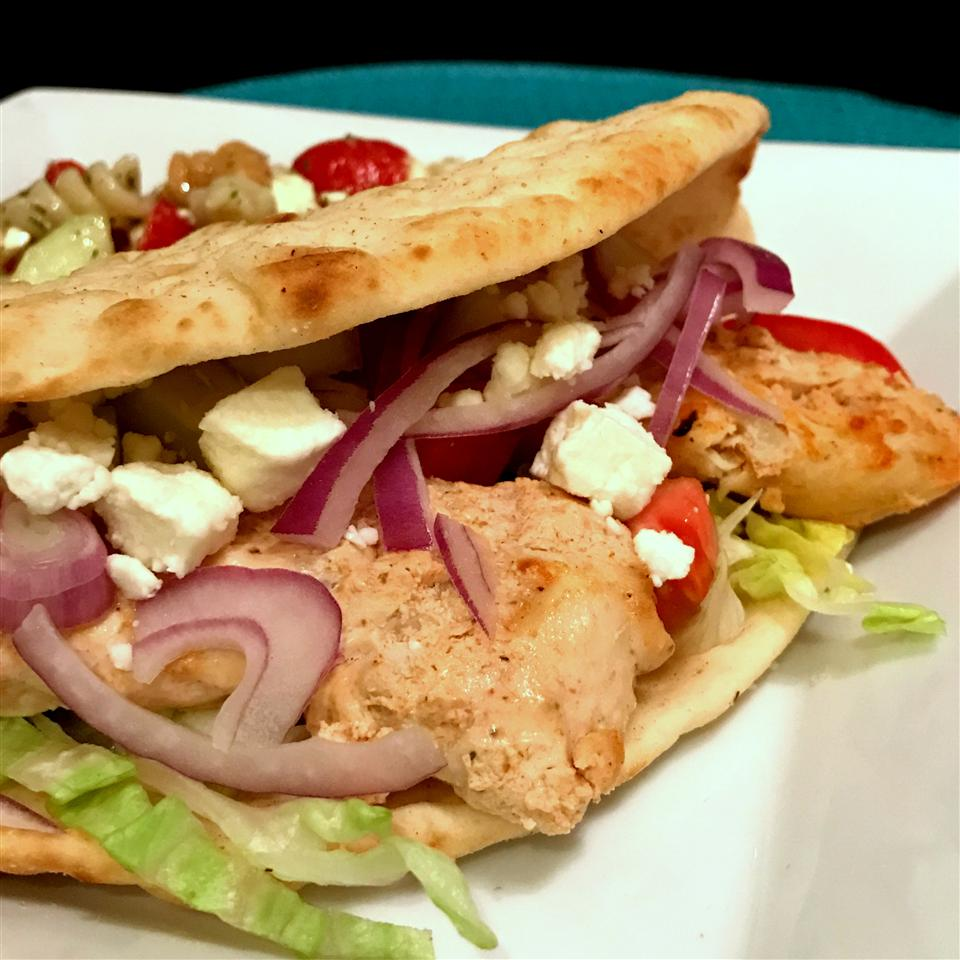

Lebanese Chicken Shawarma

Description
This is a flavorful chicken dish, which I first tasted at a little Lebanese restaurant. While normally shawarma is sliced off a rotisserie,
it can be made at home with just a few changes. Be warned, it takes a day of prep time.
For lunch, serve as a sandwich in warmed flatbread with cucumber sauce, sliced onion, and seeded tomato. For dinner, serve with rice and lentils.
Ingridients
- 1 cup plain yogurt
- 1 cup plain yogurt
- ¼ cup lemon juice
- 2 tablespoons olive oil
- 1 tablespoon tomato paste
- 3 cloves garlic, minced
- 1 teaspoon ground cumin
- 1 teaspoon ground coriander
- ½ teaspoon salt
- ½ teaspoon ground black pepper
- ¼ teaspoon red pepper flakes
- 2 pounds skinless, boneless chicken breasts, cut into 1/2-inch strips